Dịch vụ bổ sung cho xe của bạn
Ngoài dịch vụ thường xuyên, chúng tôi cung cấp một loạt các dịch vụ khác. Những điều này bao gồm điều chỉnh và hiệu chuẩn các trợ lý lái được chọn theo mô hình và thiết bị xe cụ thể, điều chỉnh và hiệu chuẩn đèn pha, chassis chẩn đoán, sắp xếp bánh xe, sửa chữa đĩa phanh và những điều khác.
-
CHẨN ĐOÁN
Chúng tôi sẽ thực hiện một chẩn đoán toàn diện về các hệ thống điện tử và cơ khí của xe của bạn sử dụng thiết bị và thiết bị ban đầu được phê duyệt bởi công ty Volkswagen AG
-

Chẩn đoán chuyên sâu
Các phép đo có mục tiêu để xác định nguyên nhân lỗi. Kiểm tra khả năng khí cháy lọt vào hệ thống làm mát bằng VAS 531 009.
-
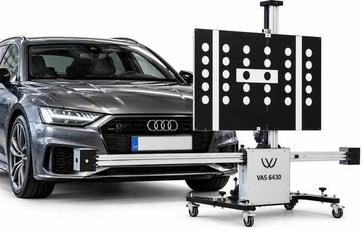
ĐIỀU CHỈNH VÀ HIỆU CHỈNH HỆ THỐNG HỖ TRỢ LÁI
Phương tiện hỗ trợ phía trước, hỗ trợ phía sau, Lane Assist, hỗ trợ bên, điều khiển hành trình thích ứng, xem vùng, quét laser, tầm nhìn ban đêm, màn hình đầu lên
-
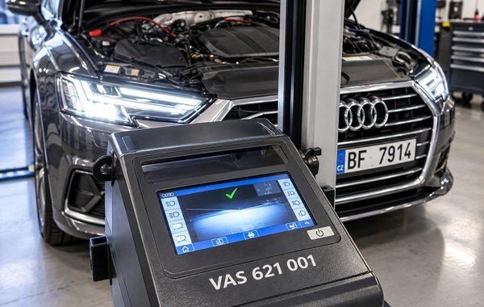
Điều chỉnh đèn pha
Điều chỉnh và cân chỉnh đèn pha (bao gồm đèn LED, HD Matrix LED-Laser).
-
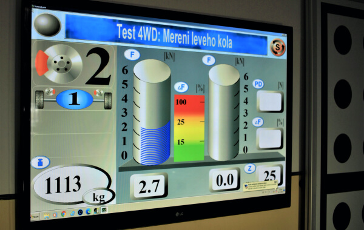
Chẩn đoán hệ thống treo
Kiểm tra hệ thống hấp thụ sốc và phanh, bao gồm phanh đậu điện, và phát hiện chơi trên cả hai trục.
-
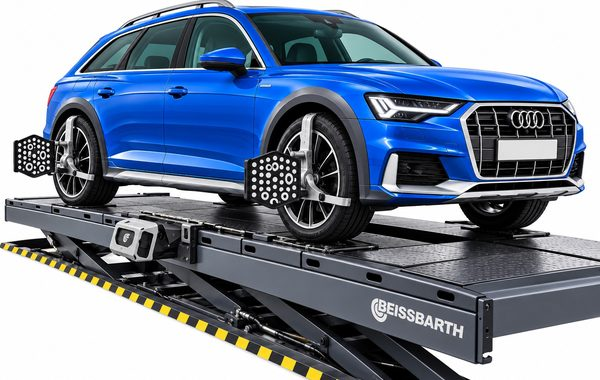
Căn chỉnh bánh xe
Chúng tôi sử dụng thiết bị của nhà sản xuất với công nghệ 3D để căn chỉnh bánh xe.
-
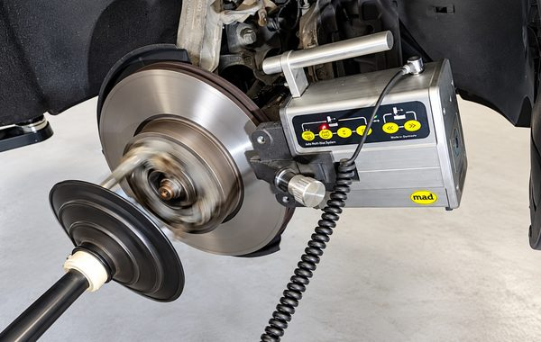
Tiện láng đĩa phanh
Chúng tôi thực hiện sửa chữa đĩa phanh bằng cách bật trực tiếp xe mà không cần phải gỡ bỏ chúng.
-
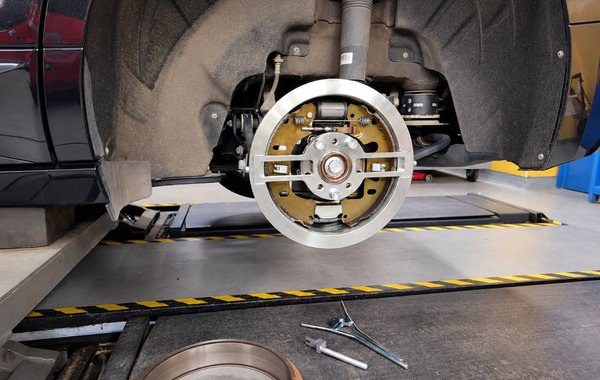
Bảo dưỡng phanh tang trống sau xe điện
Kiểm tra, bảo dưỡng phanh tang trống phía sau. Điều chỉnh cơ bản chính xác với sản phẩm thuộc dòng T10635 theo tài liệu dịch vụ của loại xe cụ thể.
-
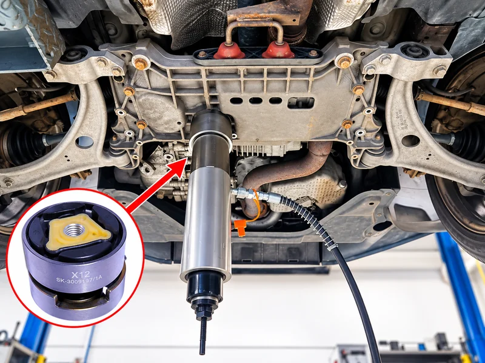
Thay thế ống lót tay đòn và khung phụ
Phong trục và cánh tay treo chuyên nghiệp thay thế bụi bằng cách sử dụng các công cụ VAS chuyên dụng. Trên xe được chọn, thay thế là có thể mà không cần phải loại bỏ toàn bộ bộ bộ phận trục.
-
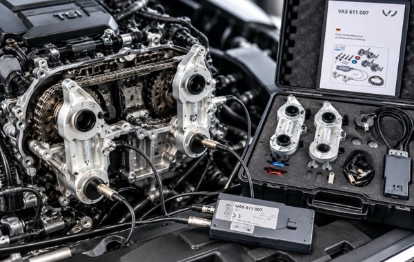
Thay dây đai cam và xích
Thay thế dây đai, xích định thời chuyên nghiệp theo đúng quy trình bảo dưỡng của nhà sản xuất.
-
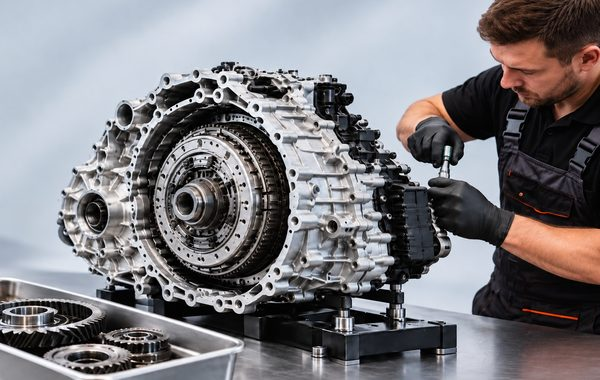
Hộp số DSG và S tronic
Chẩn đoán toàn diện, bảo trì và sửa chữa cơ khí của các hộp số tự động DSG và S tronic.
-
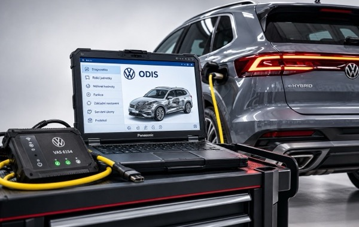
Bảo dưỡng xe hybrid và xe điện
Bảo dưỡng chuyên nghiệp, kiểm tra dịch vụ thường xuyên và chẩn đoán xe hybrid và xe điện của Tập đoàn VW.
-
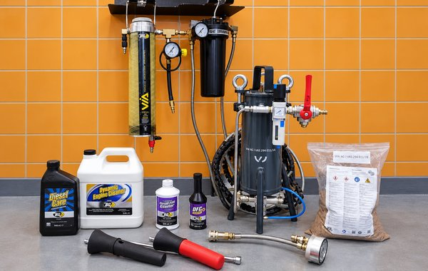
Làm sạch carbon động cơ
Quá trình khử cacbon bằng hóa chất và cơ học của động cơ xăng và diesel, bao gồm cả việc loại bỏ cặn cacbon khỏi van nạp.
-
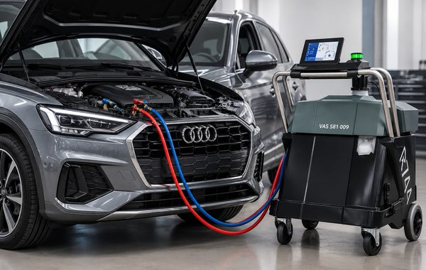
Phong sửa, sạc lại và làm sạch điều hòa không khí
Chúng tôi sạc lại máy điều hòa, xác định nguyên nhân khiến máy hoạt động kém và sửa chữa mọi lỗi được tìm thấy.
-
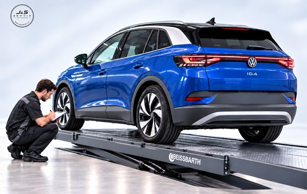
SỰ CHUẨN BỊ VÀ SẮP XẾP CHO KIỂM TRA ĐÁNG GIÁ ĐƯỜNG BỘ SÉC (STK)
Chúng tôi kiểm tra và chuẩn bị xe của bạn cho cuộc kiểm tra khả năng đi đường theo luật định của Séc (STK) hoặc thay mặt bạn sắp xếp toàn bộ quy trình.
-
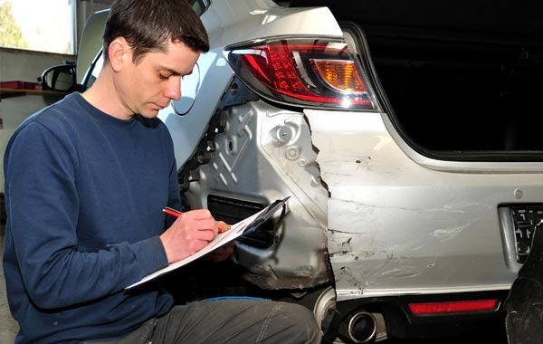
KIỂM TRA XE SAU TAI NẠN
Chúng tôi sẽ đánh giá thiệt hại rõ ràng cho xe, kiểm tra các tính năng an toàn và kỹ thuật có sẵn và đề nghị hành động tiếp theo.
Đối với dịch vụ bổ sung cuộc gọi +420 605 399 448, +420 608 313 437
Thứ Hai–Thứ Sáu 9:00–18:00